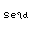

Portfolio
Here is a summary of some of my best personal projects that I've worked on over the years.
Seqd
Source code A C header-only library focused on displaying ANSI escapse sequences in the terminal - allowing for styled text and I/O using the terminal. Written to be user-friendly to C beginners and require minimum setup so the programmer can focus on the important parts of the app.